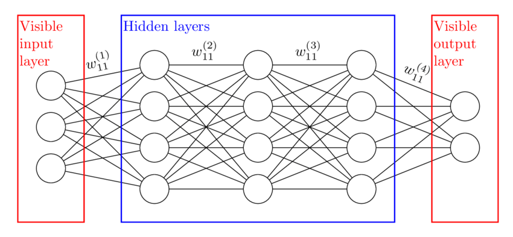
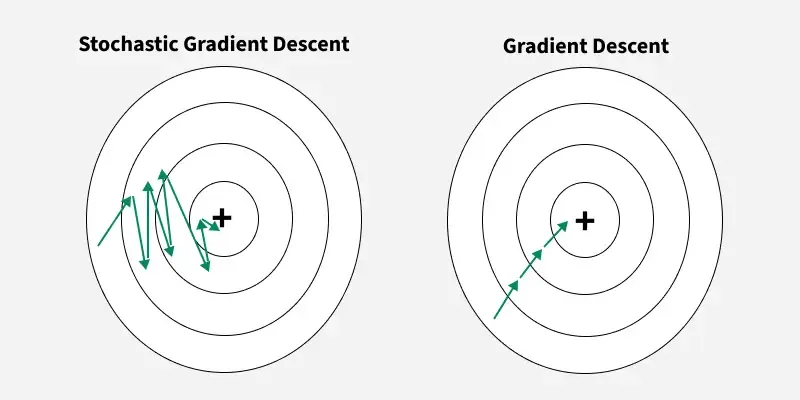

Feed-Forward Neural Networks in Finance
Perceptrons, MLPs, SGD and Financial Applications
Motivation
Why Neural Networks in Finance?
- Financial relationships are non-linear
- Classical linear models have limited expressiveness
- Neural networks can approximate any continuous function
Used in:
- Credit scoring
- Return prediction
- Volatility forecasting
- Fraud detection
Feed-Forward Neural Networks
What is a Feed-Forward Network?
- Information flows one direction only
- No cycles, no memory
Composed of:
- Input layer
- Hidden layers
- Output layer
\[\widehat{y} = F(x;\theta)\]

Feed-Forward NN Structure
The Perceptron
Single Neuron Model
\[z = w^\top x + b\] \[\widehat{y} = \phi(z)\]
Where:
- \(x\): features
- \(w\): weights
- \(b\): bias
- \(\phi\): activation function
Perceptron as a Classifier
- Binary classifier
- Linear decision boundary
- Cannot solve XOR
\[\widehat{y} = \mathbb{1}(w^\top x + b > 0)\]
Multi-Layer Perceptron (MLP)
Why Hidden Layers?
- Composition of linear + non-linear maps
- Enables non-linear decision boundaries
\[h^{(1)} = \phi(W^{(1)} x + b^{(1)})\] \[\widehat{y} = \phi(W^{(2)} h^{(1)} + b^{(2)})\]
Universal Approximation Theorem
A feed-forward network with one hidden layer can approximate any continuous function on a compact domain.
Expressiveness grows with:
- Number of neurons
- Depth
- Choice of activation
Activation Functions
Why Activations Matter
Without activations
- Network collapses to a linear model
With activations
- Introduce non-linearity
- Control gradient flow
Logistic Regression vs Neural Networks
Logistic Regression
\[ P(y=1 \mid x) = \sigma(w^\top x) \]
- Linear decision boundary
- Convex optimization
- Interpretable coefficients
- Strong statistical grounding
Typical finance uses
- Credit scoring
- Default probability
- Risk classification
Neural Networks (MLP)
\[ P(y=1 \mid x) = \sigma\big(W^{(2)} \phi(W^{(1)}x)\big) \]
- Non-linear decision boundary
- Non-convex optimization
- High expressive power
- Requires tuning & regularization
Typical finance uses
- Fraud detection
- Complex behavioral patterns
- High-dimensional signals
Decision Boundary Intuition
- Logistic regression ⇒ straight line / hyperplane
- Neural networks ⇒ curved, flexible boundaries

Curved NN boundary
Common Activation Functions
| Function | Formula | Typical Use |
|---|---|---|
| Sigmoid | \(\frac{1}{1+e^{-z}}\) | Probabilities |
| Tanh | \(\tanh(z)\) | Centered data |
| ReLU | \(\max(0,z)\) | Default hidden layers |
| Softmax | \(\frac{e^z}{\sum e^z}\) | Multiclass |


ReLU vs Sigmoid (Finance Insight)
Sigmoid:
- Vanishing gradients
- Saturation
ReLU:
- Sparse activation
- Faster convergence
- Industry standard
Loss Functions
Regression vs Classification
Regression (returns, volatility):
\[\mathscr{L}_{MSE} = \frac{1}{n}\sum (y - \widehat{y})^2\]
Classification (default, fraud):
\[\mathscr{L}_{CE} = -\frac{1}{n}\sum y \log(\widehat{y}) + (1-y)\log(1-\widehat{y})\]
Optimization
Gradient Descent
Goal:
\[\min_\theta \mathscr{L}(\theta)\]
Update:
\[\theta_{t+1} = \theta_t - \eta \nabla_\theta \mathscr{L}(\theta)\]
Stochastic Gradient Descent (SGD)
- Uses mini-batches
- Noisy but efficient
- Scales to large financial datasets
Variants:
- SGD
- Momentum
- Adam (default in practice)

SGD Illustration
Backpropagation — Intuition
Goal:
Efficiently compute how each weight affects the loss.
- Neural networks are compositions of functions
- Loss depends on outputs
- Outputs depend on weights
- Use the chain rule to propagate errors backward
Tip
💡 Backpropagation is not an optimizer.
It is a gradient computation algorithm.
Key idea
- Errors flow backwards
- Information flows forwards
Backpropagation — Mathematical View
Consider a 2-layer network:
\[ z^{(1)} = W^{(1)}x,\quad h = \phi(z^{(1)}),\quad \widehat{y} = W^{(2)}h \]
Loss: \[ \mathscr{L} = \ell(y, \widehat{y}) \]
Gradients (chain rule):
\[ \frac{\partial \mathscr{L}}{\partial W^{(2)}} = \frac{\partial \mathscr{L}}{\partial \widehat{y}} \frac{\partial \widehat{y}}{\partial W^{(2)}} \]
\[ \frac{\partial \mathscr{L}}{\partial W^{(1)}} = \frac{\partial \mathscr{L}}{\partial \widehat{y}} \frac{\partial \widehat{y}}{\partial h} \frac{\partial h}{\partial z^{(1)}} \frac{\partial z^{(1)}}{\partial W^{(1)}} \]
Gradients are reused → computational efficiency

Backpropagation
Financial Applications
Example 1: Stock Return Prediction
Features:
- Lagged returns
- Technical indicators
- Volatility measures
Target:
\[y_t = r_{t+1}\]
Example 2: Credit Scoring
- Binary classification
- Non-linear interactions between:
- Income
- Debt
- Credit history
Output:
\[P(\text{default} \mid x)\]
Example 3: Volatility Forecasting
- Non-linear alternative to GARCH
- Inputs:
- Returns
- Squared returns
- Macro variables